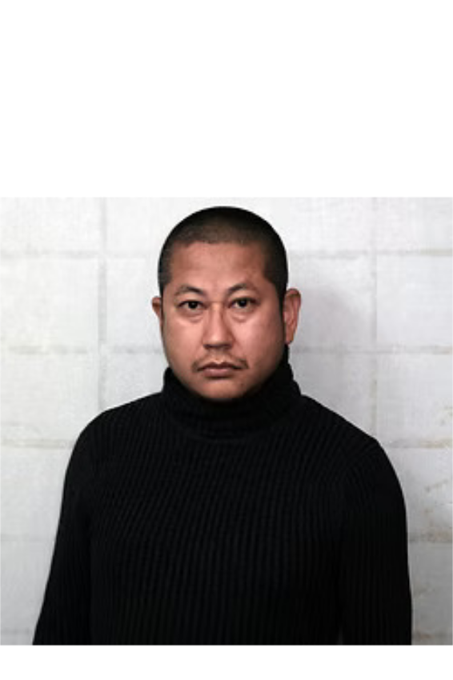
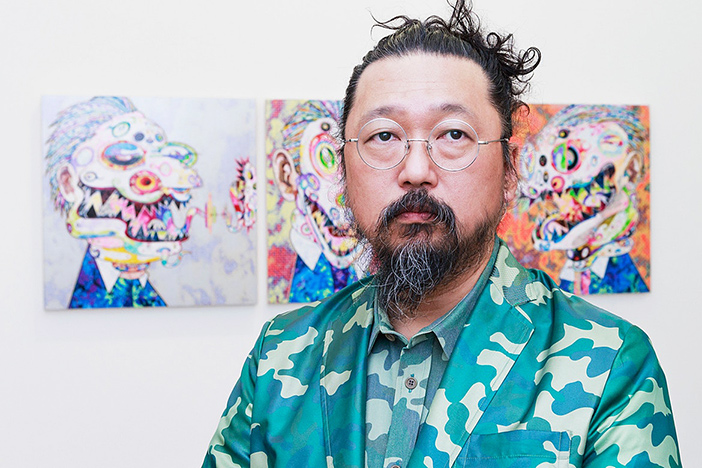
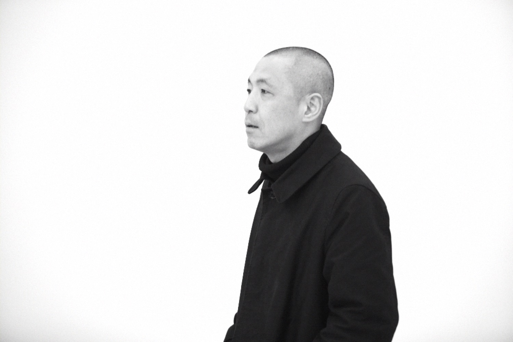
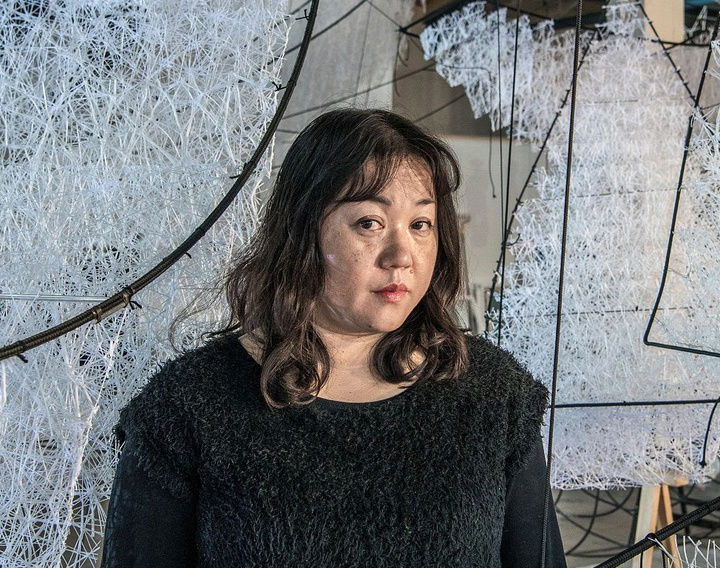
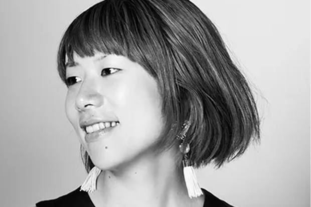
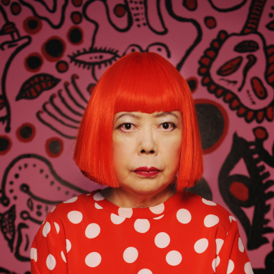

Шесть влиятельных японских художников
Современные мастера, изменившие искусство

Икенага Ясунари
Род. 1965
Известен своими портретами женщин в технике нихонга на золотых и серебряных листах.
Смотреть работы →

Такаси Мураками
Род. 1962
Создатель стиля "суперфлэт", сочетает аниме, поп-арт и традиционную японскую живопись.
Смотреть работы →

Хидеаки Кавашима
Род. 1969
Современный нихонга художник, известен психоделическими пейзажами и мистическими образами.
Смотреть работы →

Чихару Шиота
Род. 1972
Создает масштабные инсталляции из пряжи, исследуя память, тревогу и сны.
Смотреть работы →

Юко Мохри
Род. 1980
Использует найденные объекты для инсталляций о миграции, торговле и культурном обмене.
Смотреть работы →

Яёи Кусама
Род. 1929
"Королева точек", создает иммерсивные инсталляции с повторяющимися узорами.
Смотреть работы →